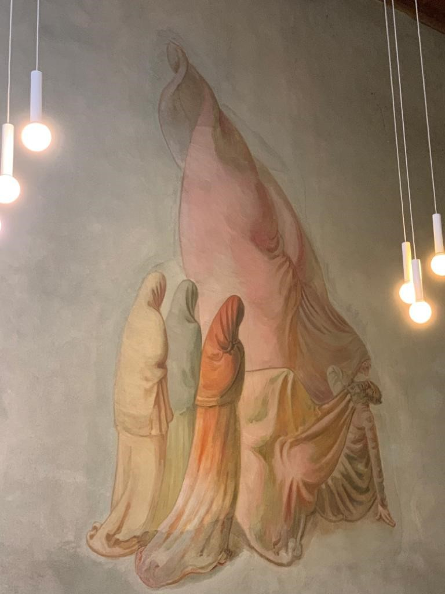
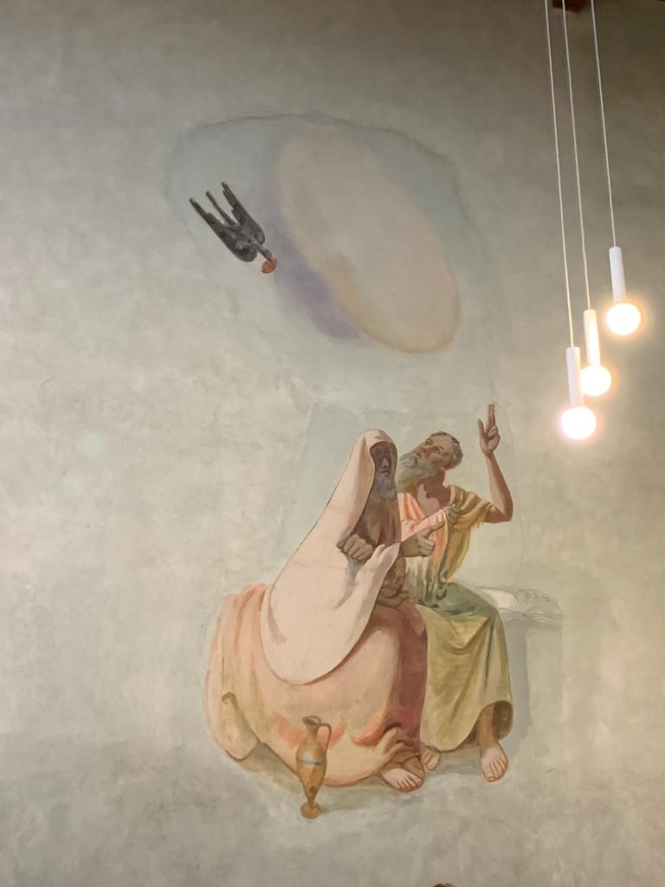
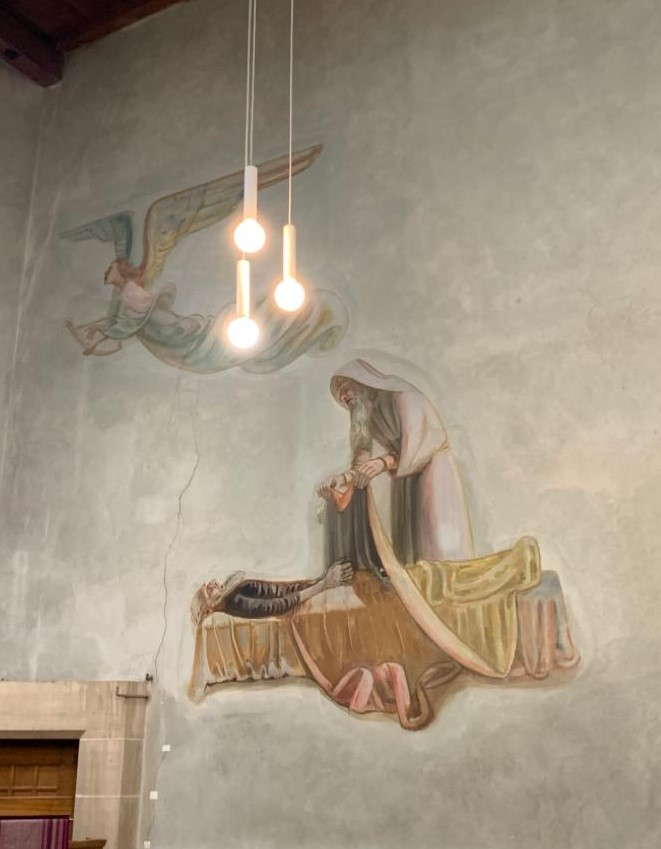

In der unteren Berner Altstadt, in unmittelbarer Nähe zum Rathaus,
befindet sich die Antoniterkirche, die heute der Lutherischen und der
Russisch-Orthodoxen Gemeinde – beides verschwindend kleine
«Diaspora»-Gemeinschaften in der mehrheitlich evangelisch-reformierten
Berner Kirchenlandschaft – als Gottesdienst- und Gemeindehaus dient. Man
muss es wissen, denn das spätgotische Gebäude reiht sich so gut in die
für Bern typischen Laubengänge ein, dass man es schnell übersieht. 1494
wurde es als Spitalkirche des Antoniterordens fertiggestellt. Die
Laienbruderschaft widmete sich seit ihrer Gründung im französischen
Saint Antoine in der Dauphiné im Jahr 1095 der Pflege von Menschen, die
an Mutterkornvergiftung erkrankt waren. Diese Krankheit wurde von
Pilzbefall am Roggen übertragen und führte zu Gefässverengungen, zum
Absterben von Gliedmassen und in schweren Fällen zum Tod.
In Bern war der Orden, dem die Krankheit ihre Bezeichnung als
«Antoniusfeuer» verdankt, spätestens seit 1284 tätig. Das Ende des 15.
Jahrhunderts gebaute Spital verfügte über 20 Betten, von denen aus die
darin liegenden Kranken einen Blick auf den Hochaltar hatten. Die Wände
waren mit 64 Fresken zu Szenen aus dem Leben des Antonius geschmückt.
Der leider nur in ganz wenigen Überresten erhaltene Zyklus enthielt
Motive, die sich auf Szenen aus der Vita Antonii des Athanasius, der
Vita Pauli des Hieronymus und den Vitae Patrum beziehen. Einige Reste
dieser Fresken befinden sich noch heute im oberen Geschoss der Kirche,
im sogenannten Freskensaal.
Zwischen 1518 und 1520 gestaltete der berühmte Berner Maler und spätere
Reformator Niklaus Manuel (um 1484-1530) den Hochaltar der Spitalkirche
mit vier Szenen aus dem Leben des Antonius. Er setzt die Versuchung des
Antonius durch eine Frauengestalt, die Peinigung durch Dämonen, die
Heilung von Kranken und Besessenen sowie den Besuch des Antonius bei
Paulus ins Bild. Manuel knüpfte damit unverkennbar an den berühmten
Isenheimer Altar von Matthias Grünewald an.
Als die Reformation
die Stadt Bern erreichte, nahm die Stifterfamilie die Altarbilder wieder
an sich – wahrscheinlich, um sie vor bilderstürmerischen Aktionen zu
schützen. Diese Vorsicht war durchaus angebracht: Als die Berner
Regierung im Jahr 1528 im Zusammenhang mit der Einführung der
Reformation den Antoniterkonvent auflöste, wurden die Ausstattungsstücke
verbrannt. Die Kirche blieb im Besitz der Regierung und wurde in den
kommenden 400 Jahren abwechselnd als Kornspeicher, Sattlerwerkstatt,
Postwagenremise, Antiquitätensaal, Pferdestall und Löschgerätemagazin
genutzt. Erst im Jahr 1939 wurde das Gebäude wieder in eine Kirche
verwandelt und von der Berner Münstergemeinde renoviert.
Aus
dieser Zeit stammen die Fresken des Berner Malers Fritz Pauli
(1891-1968), die auch heute noch zu sehen sind. In der bilderskeptischen
reformierten Tradition der Schweiz war es nicht selbstverständlich, eine
Kirche mit monumentaler Wandmalerei auszustatten. Daher stellt sich die
Frage, inwiefern das Bildprogramm von Fritz Pauli als Bruch mit dieser
Tradition zu interpretieren ist – oder ob hier möglicherweise spezifisch
reformierte Aspekte der Antonius-Rezeption ins Bild gesetzt werden. An
der Ostwand sind drei Episoden aus dem Leben des Antonius dargestellt –
gegenüber dem 64teiligen spätgotischen Antoniuszyklus eine deutliche
Reduktion. Dafür entfalten die wenigen monumentalen Fresken eine enorme
Wirkung im Raum.
Bern, Antoniterkirche. (Bild: Jonathan Heyden)
Die umgekehrte Versuchung
Das dem Eingang am nächsten gelegene Fresko, die «Versuchung», nimmt das in der Kunstgeschichte wohl beliebteste Motiv aus dem Legendenstoff um Antonius auf. Maler vieler Generationen haben ihrer künstlerischen Phantasie in bisweilen skurrilen und obszönen Figuren bei der Ausgestaltung dieses Motivs freien Lauf gelassen. Fritz Pauli scheint mit dieser Tradition zu spielen, ohne sie einfach fortzusetzen. Wenn der Einsiedler inmitten der wilden Phantastereien auf dem Isenheimer Altar des Matthias Grünwald oder auch in den Gemälden von Peter Bruegel d.Ä. und Joest von Craesbeeck «geradezu als Fremdkörper» erscheint (Gemeinhardt S. 181), so bilden bei Pauli alle fünf Figuren eine harmonische Einheit.
Fritz Pauli, Die Versuchung. (Bild: Jonathan Heyden)
Der greise Antonius hockt auf dem Boden und blickt in ein Gesicht,
welches aus einem riesigen, von oben auf Antonius zukommenden und in
Muschelform drapierten Stück Stoff hervorlugt. Vor dem Heiligen stehen
drei verhüllte Gestalten, die für die Betrachter nur von hinten zu sehen
sind und eher die Assoziation an die drei Frauen an Jesu Grab als an
dämonische Versuchungen hervorrufen. Wenn diese drei Gestalten die
Versuchungen präsentieren sollten, dann hätte Fritz Pauli es vollkommen
der Phantasie der Betrachter überlassen sich vorzustellen, worin die
Versuchungen bestehen. Oder stellt vielmehr die Figur im muschelartigen
Gewand, die über Antonius schwebt und auf ihn zuzukommen scheint, einen
Dämon dar? Vielleicht aber auch einen rettenden Engel? Ist das Gesicht
mit der übergrossen Nase eine Karikatur? Und blickt Antonius
erschrocken, erstaunt oder gar hoffnungsvoll in dieses Gesicht?
In jedem Fall wird die ikonographische Tradition umgekehrt: Antonius ist
hier nicht der Ruhepol in einer ansonsten chaotischen
Phantasielandschaft. Wenn es überhaupt einen Unruhepunkt in dieser
Darstellung gibt, dann liegt er im Gesicht des Heiligen. Die
«Versuchungen des Antonius», die Salvador Dalí oder Max Ernst nur wenige
Jahre nach der Vollendung von Paulis Fresken als Wettbewerbsbeiträge für
Albert Lewins Verfilmung von Guy de Montpassants Roman «Bel-Ami»
einreichten, knüpften viel deutlicher an die ikonographischen
Traditionen an als Fritz Pauli – wenn auch in expressionistischerem
Stil. Vielleicht kann man in der Nüchternheit der Darstellung und ihrer
fast anikonischen Deutungsoffenheit bereits eine ‹reformierte› Wendung
des in der europäischen Kunst-geschichte so wichtigen und
traditionsreichen Sujets erblicken.
Brot als Heilmittel
Die beiden anderen Fresken präsentieren Antonius gemeinsam mit Paulus von Theben, jenem Asketen, der in der hagiographischen Hauptquelle zu Antonius, der Vita Antonii des Athanasius von Alexandrien, gar nicht vorkommt, dem aber Hieronymus eine eigene Vita widmete, welche als eine hagiographische Konkurrenzschrift zur Vita Antonii des Athanasius angesehen werden kann. Athanasius, der Antonius mit seiner Vita als «Vater des Wüsten-mönchtums» etablieren wollte, hätte also möglicherweise keine Freude an den Berner Fresken gehabt. Aber sie nehmen die frühesten ikonographischen Motive aus dem Leben des Antonius auf, die in das 7. Jahrhundert zurückgehen. Das mittlere Bild zeigt Paulus und Antonius im Gespräch, wobei Paulus auf einen Raben deutet, der ein Stück Brot im Schnabel trägt.
Fritz Pauli, Paulus und Antonius im Gespräch. (Bild: Jonathan Heyden)
Hieronymus erzählt, dass der bereits 90jährige Antonius im Traum von einem Asketen erfährt, der noch besser sei als er selbst, und der noch tiefer in der Wüste lebe. Daraufhin macht er sich auf den Weg in die innere Wüste und bittet den 30 Jahre älteren Paulus um Einlass in seine Höhle. In Anspielung auf den biblischen Propheten Elia (1 Kön 17,1-6) berichtet Hieronymus, dass Paulus von einem Raben ernährt wurde, der anlässlich des Besuches durch Antonius die doppelte Menge Nahrung bringt. Fritz Pauli stellt dar, wie Paulus und Antonius darüber disputieren, wer für den anderen das Brot brechen, wer also wen bedienen darf (Vita Pauli 8-11) – ein für die Hierarchie unter den beiden Mönchs¬vätern symbolischer Streit, bei dem sie sich gegenseitig in Demut übertreffen. Noch entscheidender ist aber die Bedeutung der Brot-Szene im Kontext des Antoniterordens. Denn das Antonius-Feuer wurde ja durch vergiftetes Brot hervorgerufen, und die Kranken, welche in die Hospitäler kamen, wurden mit unvergiftetem Brot versorgt, was häufig zur Heilung führte. Dies ist wohl der Grund dafür, dass die Brot-Szene zwischen Antonius und Paulus zu den beliebtesten Darstellungen in den Antonius-Spitälern und -kapellen gehörte.
Erbstreit oder Sorge für die Toten?
Fritz Pauli, Am Sterbebett des Paulus. (Bild: Jonathan Heyden)
Das dem Altar am nächsten gelegene Fresko der Berner Antonius-Trilogie zeigt die ebenfalls nur in der Vita Pauli des Hieronymus (Kap. 16) erzählte Szene am Sterbebett des Paulus. Wer die literarische Vorlage nicht kennt, könnte meinen, Antonius decke den verstorbenen Asketen mit einem Leichentuch zu. Der genauere und durch Kenntnis der literarischen Quellen geschulte Blick sieht jedoch, dass es sich nicht um eine Decke, sondern um einen Mantel handelt, den Antonius über Paulus ausbreitet. Diese Szene hat Hieronymus in die Vita Pauli als polemische Spitze gegen Athanasius eingefügt. Athanasius hatte nämlich am Ende seiner Vita Antonii behauptet, den Mantel des Antonius von dem Asketen persönlich als Erbstück und bischöfliche Insignie erhalten zu haben. Indem Hieronymus nun erzählt, dass Antonius seinen Mantel auf Anweisung des sterbenden Paulus holt und als Leichentuch benutzt, spricht er Athanasius diese Legitimation ab. Als Leichenkleid des Paulus kann der Mantel nicht zu Athanasius zurückgekehrt sein und damit diesen als Sachwalter des Antonius legitimiert haben! Fritz Paulis Fresko hält den Moment fest, in dem Antonius am Sterbebett des Paulus ankommt, die Seele des Verstorbenen in den Himmel auffahren sieht und seinen Mantel über dem Leichnam ausbreitet. Ob der Maler die literarische Vorlage kannte oder lediglich aus dem Repertoire der Antonius-Ikonographie ausgewählt hat, ist nicht mehr zu rekonstruieren. Dieselbe Frage stellt sich im Blick auf die Betrachtenden: Sie erinnert das Bild möglicherweise eher an die Krankenpflege und Sorge um die Toten – und damit an den Zweck dieses Raumes im Spätmittelalter.
Ein Antonius in neuer Form
Wie sind die drei Szenen im Kontext des gesamten ikonographischen Programms der Berner Antoniterkirche zu interpretieren? Im Jahr 1942 kam an der Westwand die Darstellung «Der Mensch zwischen Gut und Böse» hinzu, welche nun der Antonius-Trilogie gegenübersteht und mit ihr in einen Dialog tritt, sie vielleicht sogar in einer sehr reformierten Reduktion der Heiligenverehrung auf das ethische Moment deutet. Denn in der «Versuchung des Antonius» wird ja nichts anderes dargestellt als ein „Mensch zwischen Gut und Böse“. Dieser hier, Antonius, hat sich für das Gute entschieden. Den Abschluss bildete das 1945 fertiggestellte monumentale Weihnachtsbild an der Südwand, über dem Eingang der Kirche. Die Krippenszene ist hier in die städtische Wirklichkeit der Arbeiterinnen und Handwerker eingezeichnet. Karl Barth äusserte im dritten Band seiner Kirchlichen Dogmatik seine Freude über die Darstellung der Engel: Es sei «nach dem Meer von Süßlichkeit, mit dem die Engel – N.B. ausgerechnet seit dem Beginn der Neuzeit im 16. Jahrhundert! – umgeben worden sind, eine wahre Wohltat, sie z.B. auf dem Weihnachtsfresko von Fritz Pauli im Antonierhaus in Bern Pauli endlich wieder einmal als hohe, dunkle, strenge Gestalten dargestellt zu finden.» (KD III, 576f.) Vielleicht ist die Antonius-Trilogie von Fritz Pauli an der Südwand der Berner Antoniterkirche nicht nur eine Anknüpfung an ikonographische Traditionen, sondern tatsächlich Ausdruck einer reformierten Rezeption der Antonius-Figur: Fritz Paulis Antonius in Bern repräsentiert mentale Versuchungen, wort- und brotbasierte Unterweisung und tatkräftigen Dienst am Nächsten.
Prof. Dr. Katharina Heyden ist Professorin für Ältere Geschichte des Christentums und der interreligiösen Begegnungen am Institut für Historische Theologie in Bern.
Weitere Artikel von {{ author.author }} finden Sie hier:
Zur Vertiefung:
- Athanasius von Alexandrien, Vita Antonii – Leben des Antonius. Griechisch-deutsch, hg. v. Peter Gemeinhardt, Fontes Christiani 69, Freiburg/Basel: Herder 2018.
- Gemeinhardt, Peter: Antonius – der erste Mönch. Leben, Lehre, Legende. München: Beck 2013.
- Kurzmeyer Roman (Hg.): Fritz Pauli. Maler und Radierer, Basel: Roter Stern 1994.
- Schulz-Wackerbarth, Yorick: Die Vita Pauli des Hieronymus. Darstellung und Etablierung eines Heiligen im hagiographischen Diskurs der Spätantike, Studien und Texte zu Antike und Christentum 107, Tübingen: Mohr Siebeck 2017.
- Zu einer Einführung in die Antoniterkirche siehe den Artikel von Nadja Heimlicher: Himmel, Erde, West und Ost – Die Antoniterkirche in der Berner Altstadt:https://www.theos.unibe.ch/orte/bern_antoniterkirche_heimlicher.html